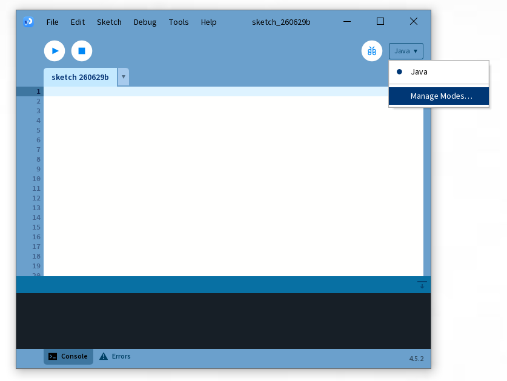
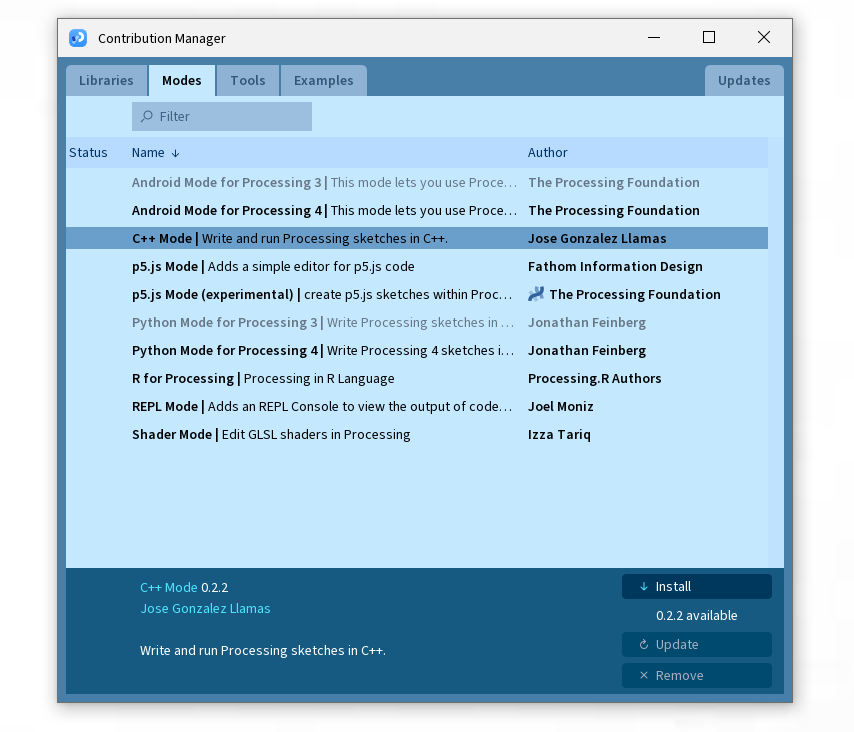

Downloads
Two ways to get C++ Mode, depending on how you want to work.
Looking for the C++ Mode?
If you want the full Processing IDE experience, writing sketches with setup() / draw() inside the Processing app, C++ Mode installs straight from the Contribution Manager. There's nothing to download from this site for that.
- Open Processing, click the mode dropdown in the top-right of the editor, and choose Add Mode...
- Search for C++ Mode in the Contribution Manager and click Install.

assets/screenshot1.png
Mode dropdown open, "Add Mode..." highlighted

assets/screenshot2.png
Contribution Manager showing C++ Mode
Once it's installed, restart Processing and select C++ from the same mode dropdown.
Download the header library
For writing plain C++ in your own editor and build system, with no Processing IDE involved. Both downloads contain the same engine.
Drag-and-Drop
For projects with no existing build system, or compiling a single file directly with g++.
CMake
For projects that already use CMake, or want the engine wired up as a library target.